Ateliê em Porto Alegre · R. João Guimarães, 31 — Rio Branco
Catálogo
Obras para encomendar
Escolha uma obra como referência e encomende o seu quadro pintado à mão pela Silvia, no tamanho que você quiser. Não há venda online: a Silvia responde com orçamento e prazo pelo WhatsApp ou por e-mail.
Cada obra tem um número. Para pedir ou tirar dúvidas, é só informar o número.
 Rosas brancas no vaso de vidroColeção Studioai
Rosas brancas no vaso de vidroColeção Studioai Campo de papoulasColeção Studioai
Campo de papoulasColeção Studioai Peônia rosaColeção StudioaiHortênsias azuis na jarraColeção Studioai
Peônia rosaColeção StudioaiHortênsias azuis na jarraColeção Studioai Girassóis na jarra rústicaColeção Studioai
Girassóis na jarra rústicaColeção Studioai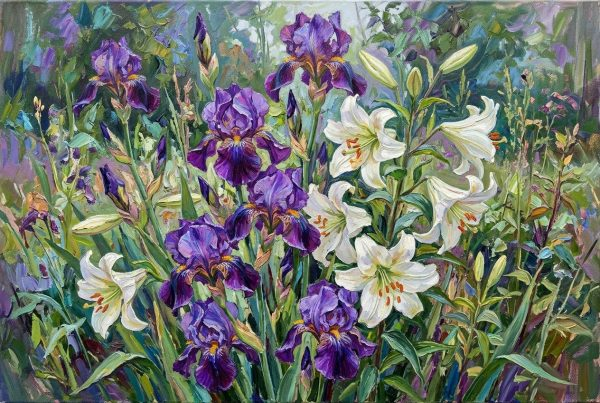
Íris e líriosColeção Studioai Primavera magenta no muro brancoColeção Studioai
Primavera magenta no muro brancoColeção Studioai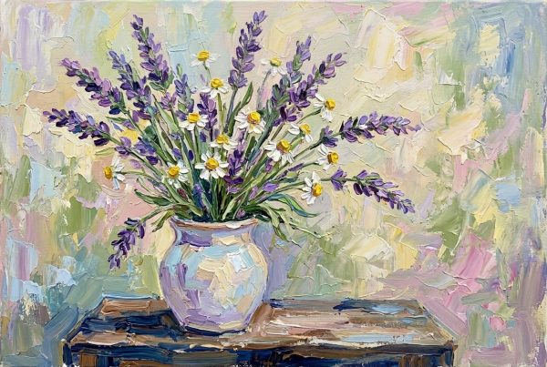
Lavanda e camomilaColeção Studioai Tulipas laranja no vaso de barroColeção Studioai
Tulipas laranja no vaso de barroColeção Studioai Buquê de primaveraColeção Studioai
Buquê de primaveraColeção Studioai Cerejas e figosColeção Studioai
Cerejas e figosColeção Studioai Limões no prato azulColeção Studioai
Limões no prato azulColeção Studioai Melancia e uvasColeção Studioai
Melancia e uvasColeção Studioai Peras e romãsColeção Studioai
Peras e romãsColeção Studioai Cesta de laranjasColeção Studioai
Cesta de laranjasColeção Studioai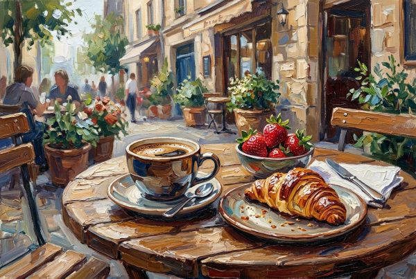
Café, croissant e morangosColeção Studioai Maçãs verdes e chaleira de cobreColeção Studioai
Maçãs verdes e chaleira de cobreColeção Studioai Frutas tropicaisColeção Studioai
Frutas tropicaisColeção Studioai Limonada com hortelãColeção Studioai
Limonada com hortelãColeção Studioai Abacates, limões e margaridasColeção Studioai
Abacates, limões e margaridasColeção Studioai Ondas turquesaColeção Studioai
Ondas turquesaColeção Studioai Farol nas pedrasColeção Studioai
Farol nas pedrasColeção Studioai Barcos de pesca ao amanhecerColeção Studioai
Barcos de pesca ao amanhecerColeção Studioai Guarda-sóis na praiaColeção StudioaiLagoa tropicalColeção StudioaiGaivotas ao entardecerColeção Studioai
Guarda-sóis na praiaColeção StudioaiLagoa tropicalColeção StudioaiGaivotas ao entardecerColeção Studioai Passarela nas dunasColeção Studioai
Passarela nas dunasColeção Studioai Costão de mar esmeraldaColeção Studioai
Costão de mar esmeraldaColeção Studioai Veleiro no mar azulColeção Studioai
Veleiro no mar azulColeção Studioai Maré baixa ao pôr do solColeção Studioai
Maré baixa ao pôr do solColeção Studioai Estrada entre colinas floridasColeção Studioai
Estrada entre colinas floridasColeção Studioai Pinheiros na neblinaColeção Studioai
Pinheiros na neblinaColeção Studioai Lago entre montanhas nevadasColeção Studioai
Lago entre montanhas nevadasColeção Studioai Vinhedo no outonoColeção Studioai
Vinhedo no outonoColeção Studioai Trigal sob a tempestadeColeção Studioai
Trigal sob a tempestadeColeção Studioai Campo de lavandaColeção Studioai
Campo de lavandaColeção Studioai Bétulas no outonoColeção Studioai
Bétulas no outonoColeção Studioai Cachoeira na mataColeção Studioai
Cachoeira na mataColeção Studioai Rio com salgueirosColeção Studioai
Rio com salgueirosColeção Studioai Pampa ao pôr do solColeção Studioai
Pampa ao pôr do solColeção Studioai Bonde amarelo em LisboaColeção Studioai
Bonde amarelo em LisboaColeção Studioai Telhados de Paris ao anoitecerColeção Studioai
Telhados de Paris ao anoitecerColeção Studioai Canal de Veneza com gôndolasColeção Studioai
Canal de Veneza com gôndolasColeção Studioai Casario colonialColeção Studioai
Casario colonialColeção Studioai Mercado de flores na chuvaColeção Studioai
Mercado de flores na chuvaColeção Studioai Vila gregaColeção Studioai
Vila gregaColeção Studioai Trompete em pinceladas soltasColeção Studioai
Trompete em pinceladas soltasColeção Studioai Nº 163 · Gaúchos a cavalo
Nº 163 · Gaúchos a cavalo Nº 162 · Avenida florida
Nº 162 · Avenida florida Nº 161 · Entardecer no lago
Nº 161 · Entardecer no lago Nº 159 · Mulher e cão à beira-mar
Nº 159 · Mulher e cão à beira-mar Nº 157 · Narcisos
Nº 157 · Narcisos Nº 156 · Tríptico: pôr do sol na praiaNº 155 · Buquê de margaridas
Nº 156 · Tríptico: pôr do sol na praiaNº 155 · Buquê de margaridas Nº 154 · Bicicleta com flores
Nº 154 · Bicicleta com flores Nº 153 · Mar e falésia
Nº 153 · Mar e falésia Nº 152 · Natureza-morta em azul
Nº 152 · Natureza-morta em azul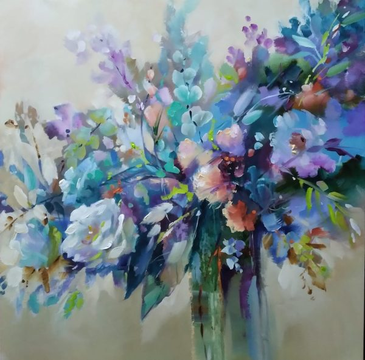
Nº 150 · Buquê lilás e azul Nº 148 · Laçador a cavalo
Nº 148 · Laçador a cavalo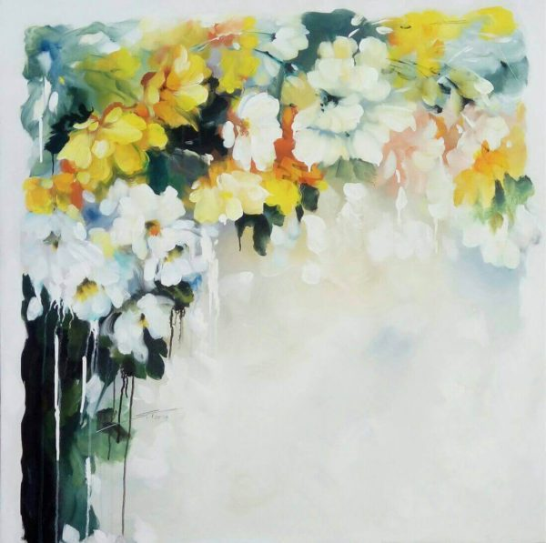
Nº 147 · Cascata de flores amarelas Nº 145 · Entardecer no Guaíba
Nº 145 · Entardecer no Guaíba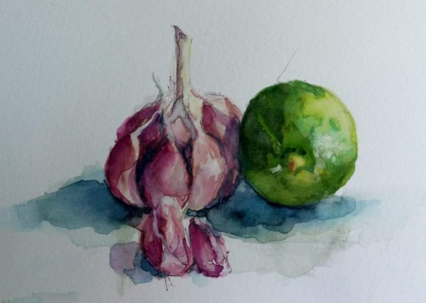
Nº 141 · Alho e limão Nº 140 · Rua antiga ao anoitecer
Nº 140 · Rua antiga ao anoitecer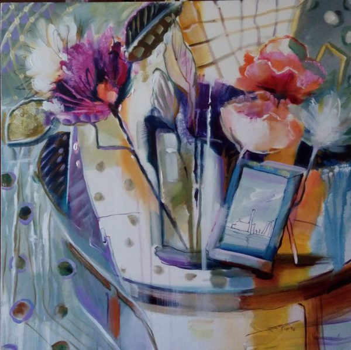
Nº 139 · Flores no ateliê Nº 136 · Flores brancas na noite
Nº 136 · Flores brancas na noite Nº 135 · Gaúcho a cavalo
Nº 135 · Gaúcho a cavalo Nº 133 · Casarão em grafite
Nº 133 · Casarão em grafite Nº 131 · Tulipas
Nº 131 · Tulipas Nº 130 · Praia com coqueiros
Nº 130 · Praia com coqueiros Nº 128 · Flores em relevo no vaso
Nº 128 · Flores em relevo no vaso Nº 126 · Casa verde com jardim
Nº 126 · Casa verde com jardim Nº 123 · Flores azuis e douradas
Nº 123 · Flores azuis e douradas Nº 122 · Flores no vaso de vidro
Nº 122 · Flores no vaso de vidro Nº 121 · Bananas e flores rosadas
Nº 121 · Bananas e flores rosadas Nº 120 · Jardim tropical
Nº 120 · Jardim tropical Nº 119 · Mamão e flores
Nº 119 · Mamão e flores Nº 118 · Romã e flores brancas
Nº 118 · Romã e flores brancas Nº 117 · Figos e flores
Nº 117 · Figos e flores Nº 116 · Kiwi e passarinho
Nº 116 · Kiwi e passarinho Nº 115 · Caju e flores
Nº 115 · Caju e flores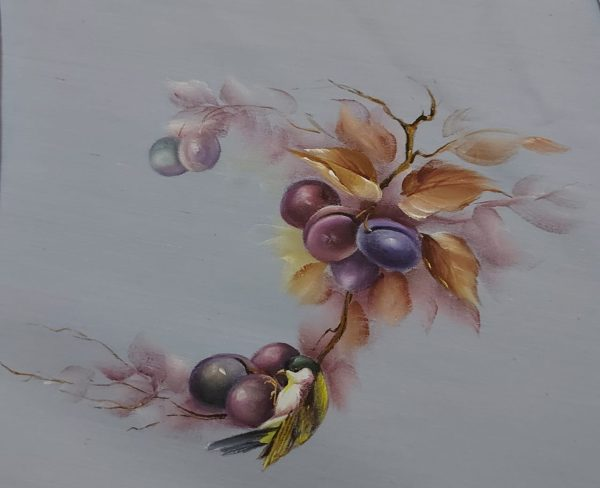
Nº 114 · Ameixas e folhas Nº 112 · Maçã verde e flores
Nº 112 · Maçã verde e flores Nº 111 · Abstrato em preto e dourado
Nº 111 · Abstrato em preto e dourado Nº 110 · Uvas e margaridas
Nº 110 · Uvas e margaridas Nº 109 · Pescador na praia
Nº 109 · Pescador na praia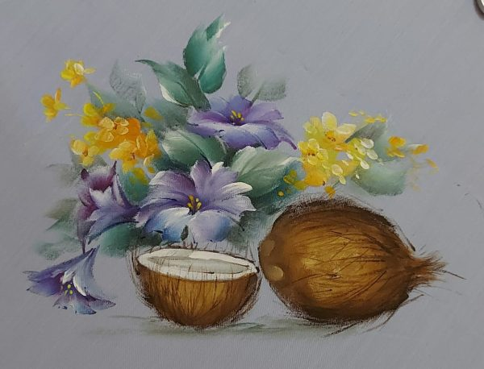
Nº 108 · Cocos e flores Nº 107 · Mercado em rua antiga
Nº 107 · Mercado em rua antiga Nº 106 · Rua florida com toldos
Nº 106 · Rua florida com toldos Nº 104 · Búfalo e leão
Nº 104 · Búfalo e leão Nº 101 · Flores em aquarela
Nº 101 · Flores em aquarela Nº 100 · Explosão de flores
Nº 100 · Explosão de flores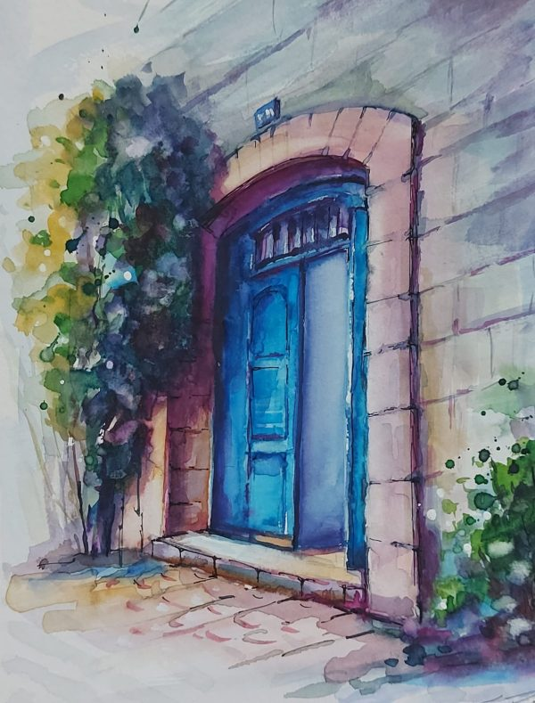
Nº 97 · Porta azul com trepadeira Nº 96 · Flores ao vento
Nº 96 · Flores ao vento Nº 95 · Ramo de flores leve
Nº 95 · Ramo de flores leve Nº 94 · Peônias brancas
Nº 94 · Peônias brancas Nº 92 · Flores lilases em relevo
Nº 92 · Flores lilases em relevo Nº 91 · Praia com balão
Nº 91 · Praia com balão Nº 90 · Pescadores no barco
Nº 90 · Pescadores no barco Nº 89 · Lago azul ao amanhecer
Nº 89 · Lago azul ao amanhecer Nº 87 · Vaso azul com flores
Nº 87 · Vaso azul com flores Nº 86 · Fantasia de cores
Nº 86 · Fantasia de cores Nº 85 · Veleiros na baía
Nº 85 · Veleiros na baía Nº 82 · Orquídeas
Nº 82 · Orquídeas Nº 80 · Flores em transparência
Nº 80 · Flores em transparência Nº 79 · Peões a cavalo ao pôr do sol
Nº 79 · Peões a cavalo ao pôr do sol Nº 77 · Pai e filho na rua à noite
Nº 77 · Pai e filho na rua à noite Nº 72 · Edifício de vidro e jardim
Nº 72 · Edifício de vidro e jardim Nº 70 · Garça ao entardecer
Nº 70 · Garça ao entardecer Nº 69 · Noite no pátio colonial
Nº 69 · Noite no pátio colonial Nº 67 · Retrato de pug
Nº 67 · Retrato de pug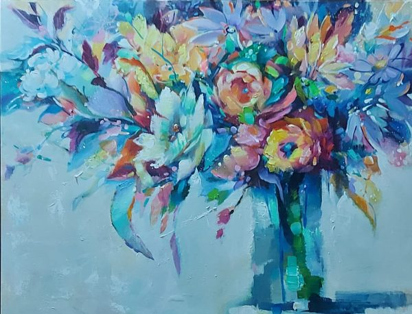
Nº 66 · Vaso de flores em azulNº 65 · Veleiro ao pôr do sol Nº 64 · Casa de madeira no outono
Nº 64 · Casa de madeira no outono Nº 56 · Moinho no campo
Nº 56 · Moinho no campo Nº 55 · Passeio na chuva ao entardecer
Nº 55 · Passeio na chuva ao entardecer Nº 54 · Retrato de cachorrinho
Nº 54 · Retrato de cachorrinho Nº 52 · Abstrato em vermelho e ouro
Nº 52 · Abstrato em vermelho e ouro Nº 51 · Moedor de café e violetas
Nº 51 · Moedor de café e violetas Nº 50 · Noite de chuva em Paris
Nº 50 · Noite de chuva em Paris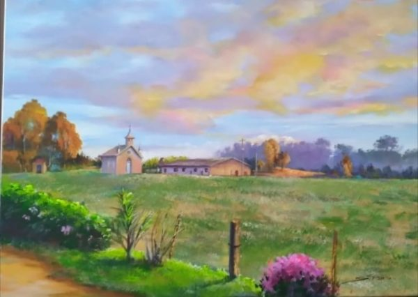
Nº 49 · Capela no campo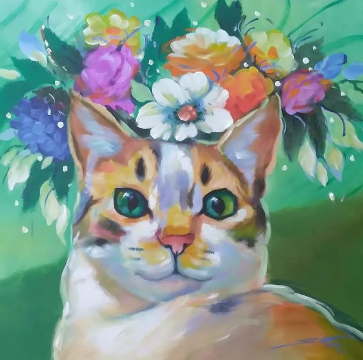
Nº 48 · Gata com coroa de flores Nº 47 · Abstrato em azul e âmbar
Nº 47 · Abstrato em azul e âmbar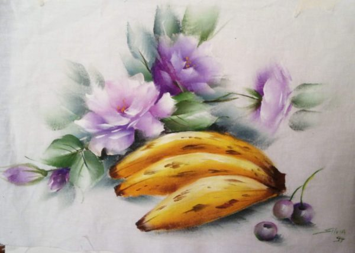
Nº 46 · Bananas e flores lilases Nº 45 · Pôr do sol sobre a cidade
Nº 45 · Pôr do sol sobre a cidade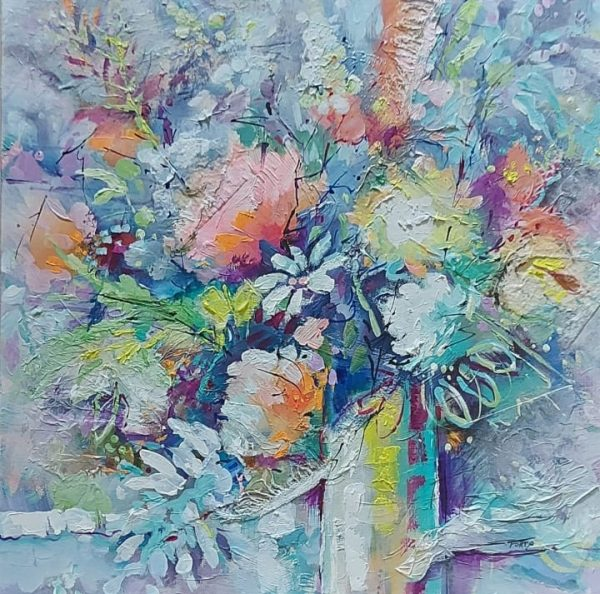
Nº 44 · Buquê em relevo colorido Nº 32 · Abstrato em vermelho
Nº 32 · Abstrato em vermelho Nº 31 · Abstrato em lilás e dourado
Nº 31 · Abstrato em lilás e dourado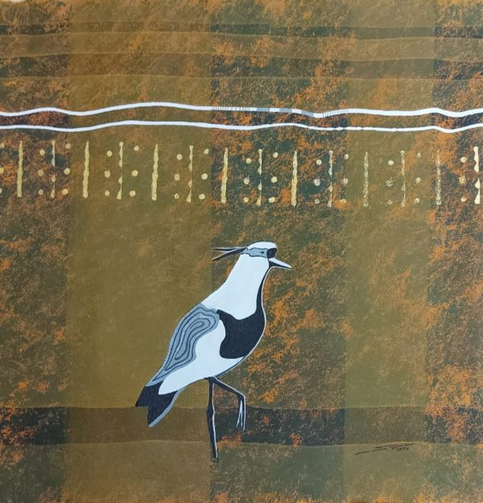
Nº 27 · Pássaro em fundo douradoNº 26 · Cachorro de pelo preto Nº 22 · Esquiadores na neve
Nº 22 · Esquiadores na neve Nº 21 · Lua cheia sobre as rochas
Nº 21 · Lua cheia sobre as rochas Nº 20 · Canal de Veneza
Nº 20 · Canal de Veneza Nº 19 · Casa amarela com jardim
Nº 19 · Casa amarela com jardim Nº 18 · Flores da primavera, detalhe
Nº 18 · Flores da primavera, detalhe Nº 17 · Vaso verde com flores azuis
Nº 17 · Vaso verde com flores azuis Nº 16 · Vaso com flores tropicais
Nº 16 · Vaso com flores tropicais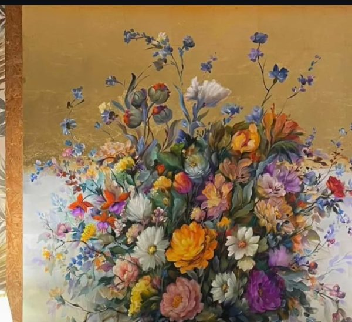
Nº 15 · Flores da primavera em folha de ouro Nº 14 · Guarda-chuva amarelo
Nº 14 · Guarda-chuva amarelo Nº 13 · Bonde e bicicleta na chuva
Nº 13 · Bonde e bicicleta na chuva Nº 12 · Mulher de vermelho na rua antiga
Nº 12 · Mulher de vermelho na rua antiga Nº 11 · Feira de flores
Nº 11 · Feira de flores Nº 4 · Cachorro de olhos azuis
Nº 4 · Cachorro de olhos azuis Nº 3 · Cavalo com rédea
Nº 3 · Cavalo com rédea Nº 2 · Flores laranja à beira-mar
Nº 2 · Flores laranja à beira-mar Nº 1 · Mulher de guarda-chuva na floricultura
Nº 1 · Mulher de guarda-chuva na floricultura Ciclista na rua florida
Ciclista na rua floridaNão achou o que procura? A Silvia pinta a partir da sua foto ou da sua ideia.
Encomendar pelo WhatsApp Enviar e-mail para a Silvia© 2026 Silvia Porto — Artes Plásticas · Porto Alegre, RSEncomendas · WhatsApp (51) 99283-8195 · silviabeust1@gmail.comDesenvolvido por Diego Kasper - +Quadros